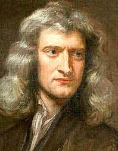

Vida

Isaac Newton fue un físico y matemático inglés que desarrolló los
principios de la física moderna, incluidas las leyes del movimiento, y
se le reconoce como una de las grandes mentes de la Revolución
científica del siglo XVII.
En 1687, publicó su obra más aclamada, Philosophiae Naturalis
Principia Mathematica (Principios matemáticos de la filosofía
natural), reconocido como el libro más influyente sobre física. En
1705, fue nombrado caballero por la reina Ana de Inglaterra,
convirtiéndolo en Sir Isaac Newton.
VIDA TEMPRANA Y FAMILIA
Newton nació el 4 de enero de 1643 en Woolsthorpe, Lincolnshire,
Inglaterra. Utilizando el «antiguo» calendario juliano, la fecha de
nacimiento de Newton a veces se muestra como el 25 de diciembre de
1642.
Newton era el único hijo de un próspero agricultor local, también
llamado Isaac, que murió tres meses antes de que él naciera. Newton,
un bebé prematuro nacido pequeño y débil, no se esperaba que
sobreviviera.
Cuando tenía 3 años, su madre, Hannah Ayscough Newton, se volvió a
casar con un ministro acomodado, Barnabas Smith, por lo que dejó al
joven Newton a cargo de su abuela materna.
La experiencia dejó una huella indeleble en Newton, que más tarde se
manifestó como una aguda sensación de inseguridad.
A los 12 años, Newton se reunió con su madre tras la muerte de su
segundo marido. Trajo consigo a sus tres hijos pequeños, fruto de su
segundo matrimonio
Newton se matriculó en la King’s School en Grantham, una ciudad de
Lincolnshire, donde se hospedó con un boticario local y conoció el
fascinante mundo de la química.
Su madre lo sacó de la escuela a los 12 años. Su plan era convertirlo
en granjero, para que cuidara la granja. Newton fracasó
miserablemente, ya que la agricultura le parecía monótona, por lo que
pronto fue enviado de regreso a King’s School para terminar su
educación básica.
Siendo consciente de las habilidades intelectuales innatas del joven,
su tío, un graduado del Trinity College de la Universidad de
Cambridge, persuadió a la madre de Newton para que ingresara en la
universidad a los dieciocho años. Newton no asistía regularmente a
clase y se graduó como un estudiante mediocre. En 1663 conoció a Isaac
Barrow, que le impartió clases de matemáticas y a quien superaría en
poco tiempo. La geometría y la óptica ya ocupaban gran protagonismo en
su vida. Mantuvo correspondencia con la Royal Society, a quienes
remitió u telescopio de construcción propia y otros descubrimientos
que despertaron el interés y la controversia entre algunos de sus
miembros, especialmente de Robert Hooke.
REVOLUCIÓN CIENTÍFICA
Cuando Newton llegó a Cambridge, la Revolución Científica del siglo
XVII ya estaba en plena vigencia. La visión heliocéntrica del
universo, teorizada por los astrónomos Nicolaus Copernicus y Johannes
Kepler, y luego refinada por Galileo, era bien conocida en la mayoría
de los círculos académicos europeos.
El filósofo René Descartes había comenzado a formular un nuevo
concepto de la naturaleza como una máquina intrincada, impersonal e
inerte. Sin embargo, como la mayoría de las universidades de Europa,
Cambridge estaba impregnada de la filosofía aristotélica y una
interpretación de la naturaleza basada en una visión geocéntrica del
universo, que trataba la naturaleza en términos cualitativos más que
cuantitativos.
Durante sus primeros tres años en Cambridge, a Newton se le impartió
el plan de estudios tradicional, pero él estaba fascinado con la
ciencia más avanzada. Dedicaba todo su tiempo libre a leer a los
filósofos modernos.
Fue durante este tiempo que Newton escribió un segundo cuaderno de
notas, titulado «Quaestiones Quaedam Philosophicae» («Ciertas
cuestiones filosóficas»). Las «Quaestiones» revelan que Newton había
descubierto el nuevo concepto de naturaleza que proporcionó el marco
para la Revolución Científica. Aunque Newton se graduó sin honores ni
distinciones, sus esfuerzos le valieron el título de académico y
cuatro años de apoyo financiero para su futura educación.
En 1665, la peste bubónica que asolaba Europa había llegado a
Cambridge, obligando a cerrar la universidad. Tras una pausa de dos
años, Newton regresó a Cambridge en 1667 y fue elegido miembro menor
en el Trinity College, ya que todavía no se le consideraba un erudito
destacado.
En los años siguientes, su fortuna mejoró. Newton recibió su maestría
en artes en 1669. Durante este tiempo, se encontró con el libro
publicado de Nicholas Mercator sobre métodos para lidiar con series
infinitas.
Newton escribió rápidamente un tratado, De Analysi, exponiendo sus
propios resultados de mayor alcance. Compartió esto con su amigo y
mentor Isaac Barrow, pero no incluyó su nombre como autor. En junio de
1669, Barrow compartió el manuscrito no acreditado con el matemático
británico John Collins. En agosto de 1669, Barrow identificó a su
autor ante Collins como «el señor Newton … muy joven … pero de un
extraordinario genio y competencia en estas materias».
El trabajo de Newton llamó la atención de la comunidad matemática por
primera vez. Poco después, Barrow renunció a su cátedra Lucasiana en
Cambridge y Newton asumió la presidencia.